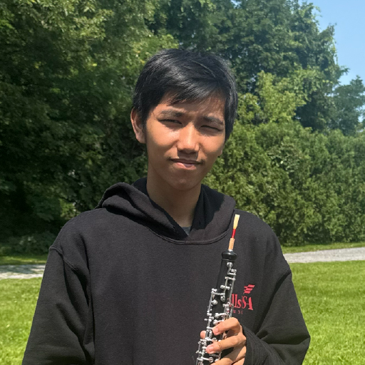

NIGHT TERRORS (Short Film)
Co-Director, Cameraman, & Music Composer
Created for SkillsUSA States, co-creator Olive Foote and I produced this short film from a random prompt and assigned line of dialogue, placing 4th overall.
Read more →Hey! I'm Nicholas Scott-Mendez (Nick or Nico for short). I'm an 18-year-old Digital Media Communications major at Houghton University, with a minor in Music Education. I create music compositions and arrangements, as well as typography, graphic designs, logos, and video productions ranging from vlogs and films to other creative projects.
Read more →
A selection of video work I've worked on.
Created for SkillsUSA States, co-creator Olive Foote and I produced this short film from a random prompt and assigned line of dialogue, placing 4th overall.
Read more →Created for SkillsUSA Regionals, James Oliver and I competed in video production to create a one-minute-long video promoting SkillsUSA, placing 2nd.
Read more →